Images extraites toutes les 1 à 3 secondes. Les pubs actives depuis des mois sont celles qui rapportent.
Active depuis le 7 avril 2026 (6 mois). 8 s. Une seule ligne « POV : Je me filme avec la caméra Moovora 4K », fin noire logo + « Stock limité ».
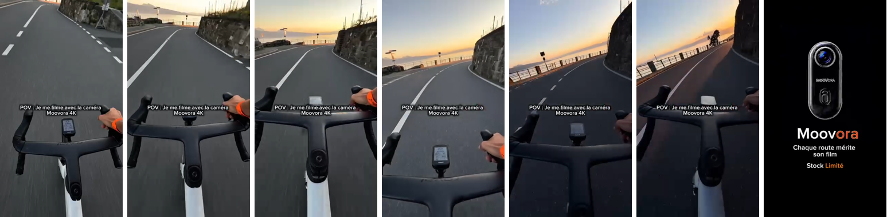
Active depuis le 7 avril 2026. 16 s. « Pourquoi payer aussi cher ? » sur la page GoPro à 449,99 €, mains qui déballent les accessoires, caméra sur le vélo, galerie de vidéos sur le téléphone. Sous-titres gras, mot clé en orange.
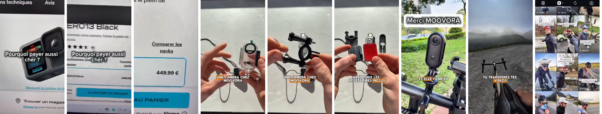
Active depuis le 24 avril 2026. 15 s. Accroche humour façon Snapchat, puis caméra sur le casque, « Les supports sont offerts ».
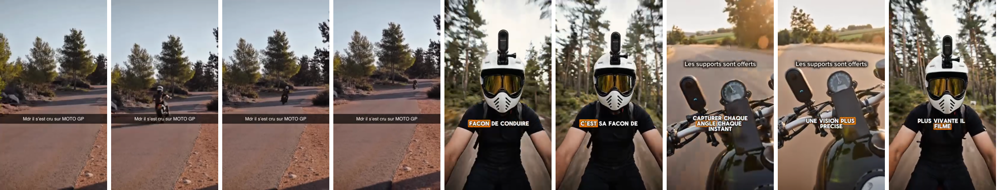
Active depuis le 4 avril 2026. 8 s. « POV : La caméra 4K que les cyclistes recherchent », main qui pose la caméra sur le casque.
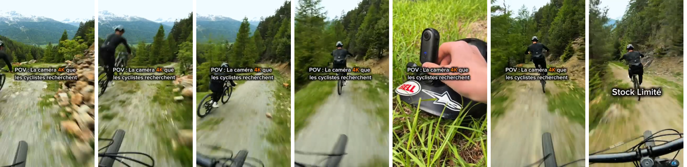
3 versions en ligne. 39 s. Un plan par seconde, un mot géant par plan (« EN 4K », « SANS LES MAINS », « SUR TES VÊTEMENTS », « C'EST FACILE », « UN CADEAU »).
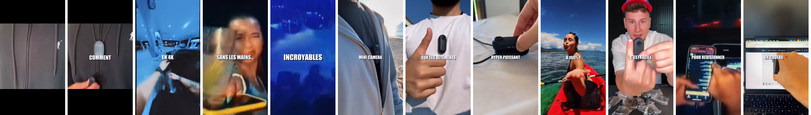
3 versions en ligne. 32 s. Un motard dans son garage : la GoPro coûte une fortune, il essaie, l'appli, « cliquez sur le lien ». Sous-titres mot à mot.
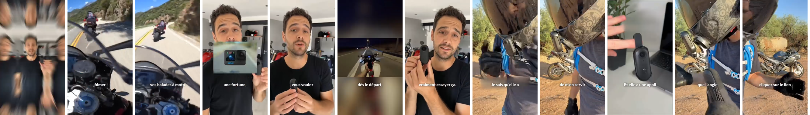
13 s. Installation de la caméra dans un casque, puis les images filmées sur circuit.
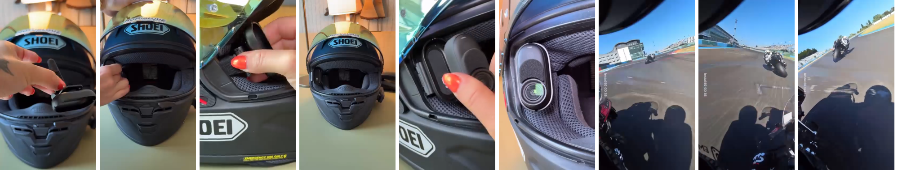
15 s. « Pov : Tu arrives sur le plus célèbre passage piéton du monde », puis les résultats de chaque mode.
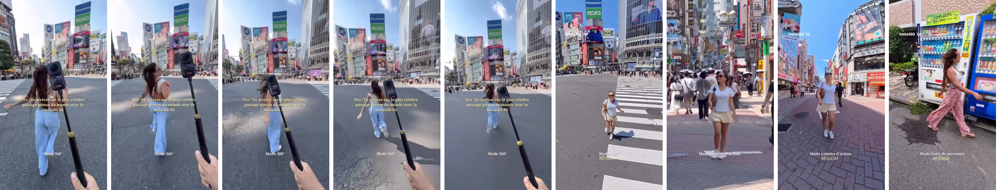
6 s, horizontal, très léché. Seule pub de type « studio » trouvée, et uniquement chez la grande marque, avec ses vraies images.
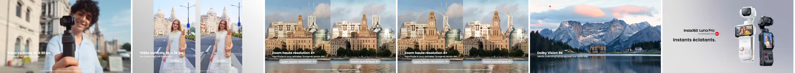
Même caméra que la KapsulCam, vendue sous d'autres noms (H88 Pro, Intepoll TO 3S, SPIKECAM H88). Ce sont les images que la caméra produit vraiment.
12 s. Déballage, caméra sur le menton du casque moto, POV en magasin, appli, POV moto de nuit. Le format exact d'une pub gagnante, avec les vraies images de la caméra.
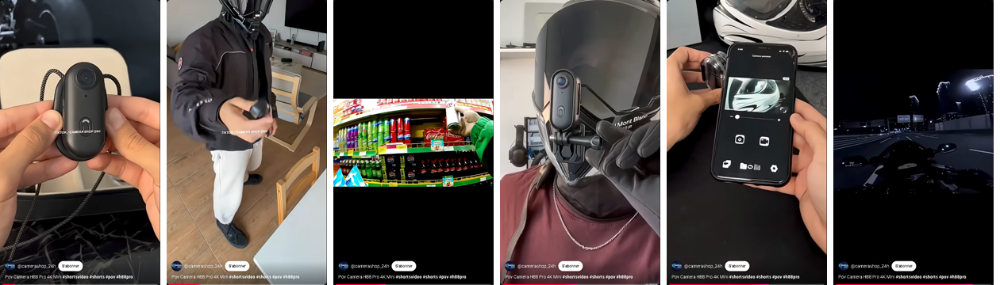
29 s. Gros mots violets, collier aimanté identique au nôtre, puis POV filmé avec la caméra (station de lavage) : image correcte en journée.
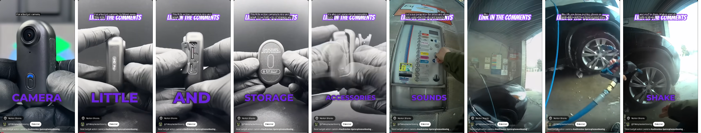
48 s. Créatrice face caméra, collier aimanté, accessoires, boîte « Sports Camera 4K WIFI ». Format témoignage.
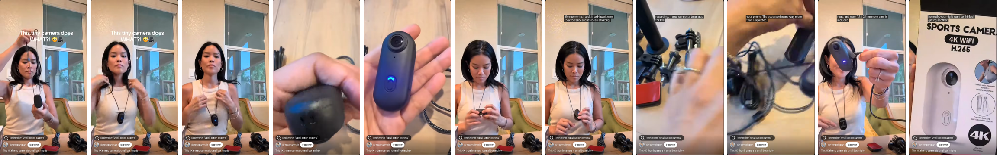
Rushes non montés, en ville et sur route : grand angle, image douce, pas de stabilisation de niveau GoPro.
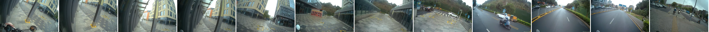